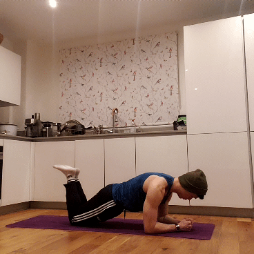
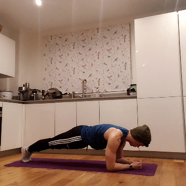
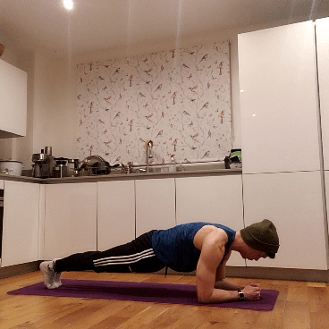
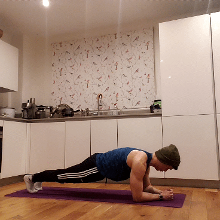
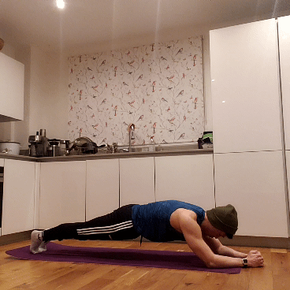

Core: Plank
1 Knee Plank

This variation offers more support than a traditional plank by making it easier to balance. As a result, your core has to put in less work to keep your body straight. Perfecting your form on this is crucial when transitioning to a full plank!
Tips:
- Just like a normal plank, retain a straight line from head to toe. Don't let your butt sag or point up too high!
- If possible, rest your knees on a soft surface like a yoga mat.
- This is a timed exercise that tests your endurance, so you progress by doing it for longer rather than more reps.
2 Elbow Plank

This is probably what most people think of when they're asked what a "plank" is. Or maybe a piece of hard wood. Either interpretation is right, since you'll need to as rigid as wood to do this correctly.
Tips:
- Make sure your butt doesn't drop too low or raise up too high! Filming yourself or having someone provide feedback is invaluable for monitoring your form.
- Tense your abs - a good way to picture this is if someone were about to punch you in the gut.
- This is a timed exercise that tests your endurance, so you progress by doing it for longer rather than more reps.
3 Marching Planks

After a while, the normal plank gets boring. What are you supposed to do while you wait? Introducing some dynamic movement is a great way to further tax your abdominals. True to its name, marching planks will show you that a plank doesn't have to be a boring pose.
Tips:
- Keep each leg straight as you raise it, and only go as far as you feel comfortable.
- Every other part of your body (aside from the single leg that's moving) should remain completely stationary.
- Wait until the raised leg is firmly planted back on the mat/floor before you begin to move the other one. Doing these slow and controlled is harder than doing them fast!
4 Tuck Planks

These are seriously challenging: not only do you have to balance on one side of your body, but you'll also have to squeeze your abs like a pair of tweezers. Doing these with good form requires real coordination, so if you can do it - well done!
Tips:
- Bring the elbow and knee on one side of the body together. They don't have to touch, simply brought together using your abs.
- Remember: the focus of this exercise is retaining good planking form using only one side of your body, not the dynamic movement of the other side.
- Just like the marching plank, wait until the arm and leg are firmly planted before moving the other side (unless you can fly).
5 LLPT (Long-Lever Posterior-Tilt) Plank

Imagine thinking: how do I make planks even harder? If that's in any way relatable to you, a) seek psychological help immediately and b) have a go at the LLPT plank! After holding this for 30 seconds, you'll wish normal planks were all you ever knew.
For a scientific paper that talks about the LLPT (including a full technique breakdown), click the link below.
LLPT Plank Paper
Tips:
- Unlike a traditional plank, your elbows are at your eye level instead of your hands. You can also move them further forward to make it even harder. This is the LL (long-lever) part of the LLPT plank.
- Once in this position, contract your glutes as hard as you can while bringing your pubic bone towards your belly (like you're pelvic thrusting towards the sky). This is called posterior tilt, hence the PT part of the LLPT plank.
- Enjoy :)
HOME